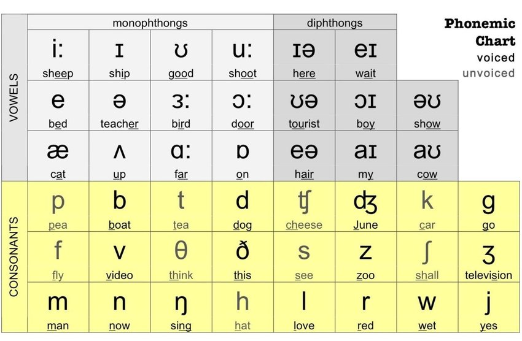

There are many sounds in English; we all know the traditional 44 phonemes of Received Pronunciation. You may have at some point seen a chart like this:
But of course, in daily speech, we often don't hear all 44 sounds, or some sounds sound completely foreign or different to us. And there are many reasons for that.
Allophones are slightly different ways of pronouncing the same phoneme in any language, which may or may not be reflected in spellings.
Usually, replacing one allophone with another won't make you sound weird, but people can easily spot the non-native.
In fact, there are many sorts of allophonic variation in English:
For example, the aspirated /t/ in "tick" and the unaspirated /t/ in "stick" are allophones. In fact, they exist in complementary distribution, where allophones of a phoneme specifically fall on different positions in a word.
Aspirated p, t, k (or c) usually only appear at start of words, while their unaspirated variants (which sound more like b, d, g) usually appear in the middle of words, or in consonant clusters, such as /sp/, /st/, or /sk/.
However, these 2 terms are not mutually inclusive: /h/ usually appears word-initially and /ŋ/ word-finally, so they are in complementary distribution, but they don't sound like one another, and are regarded as separate phonemes.
Sometimes, allophones happen when a sound is influenced by a sound after or before it.
In English, yod-coalescence refers to a merging of /t/, /d/, /s/ and /z/ before /j/, resulting in e.g. Tuesday becoming "Chewsday". Additionally, you may also hear /t/ as /ts/ in front of /i/, which is due to fronting.
The "rhotic" reflects how the letter "r" is pronounced in English dialects. Traditionally it is usually represented as /ɹ/, or just /r/ (because there's really only one consonantal R in English), but there's a lot of variation involved.
Word-initially, it may be /ɹ̠ʷ/ (labialized variant), /r/ (trilled, especially conservative) and /ɾ/, which comes from a reduced /t/ or /d/.
Additionally, word-final R's in -ar, -er, -or, etc. often get dropped as well, leaving a long vowel in its place.
Even though this is regarded as a proper English phoneme, I put it here because we don't have a standardized way to spell /ʒ/ in native English words (compare sh (or ci, si, ti)= /ʃ/, ch = /tʃ/, j = /dʒ/).
This is because /ʒ/ most commonly appears as voicings of /ʃ/ in certain conditions, such as between vowels, e.g. vision = /'vɪʒən/. Hence, it is often forgotten.
Things are looking up for /ʒ/ though, as in some instances /ʃ/ and /ʒ/ form a minimal pair, e.g. Confucian (with /ʃ/) and confusion (with /ʒ/).
Additionally, we have native words such as genre /ʒɒn.rə/ and beige /beɪʒ/, and recent slang and loanwords have also brought in /ʒ/, such as zhuzh /ʒʊʒ/ (meaning similarly to "tune up") or the Russian name Zhukov /ʒuːkɒf/.
In various reading guides, /ʒ/ is spelt as "zh", reflecting its rise as a more important phoneme.
In fact, voiced phonemes arising as independent phonemes from their voiceless counterparts has also occurred throughout the development of English.
Particularly /v/, /z/, and /ð/, which were just allophones of /f/, /s/, and /θ/ respectively in the past and are spelt with the same letter (/θ/ can be spelt with both þ and ð).
However, with words imported from French coming into English, the first 2 became independent phonemes and got their own letters, while /ð/ just arose by itself for whatever reason.
/x/ is the "ch" in Scottish loch. It has a voiced equivalent too, /ɣ/, which is the "funny dutch "g"" phoneme, and is somewhat difficult for English learners to pronounce without butchering it.
Nowadays it mainly comes from foreign words and names, such as the German Bach. Many people read this as a /k/, and /x/ is often notated as "kh" in reading guides. But the story goes deeper than that.
There are 2 main sources of /x/ in the past:
a. Loanwords from Greek containing the letter χ (chi), pronounced /x/ in Modern Greek. This is also why some words containing "ch" are pronouned as /k/.
b. "gh" in Middle English, which gradually got lost and now is "silent" in Modern English.
Eventually both forms were lost and got assimilated into our current existing phonemes.
As for /ç/, it is not considered an independent phoneme, but like yod-coalescence may also occur in /hj/ sequences, such as in human. In fact, the name of Shetland comes from "Hjaltland", where /hj/ gets changed to /ç/, then to /ʃ/ in English.
You may encounter some people who pronounce "wh" words with a "h" before the "w". This is the /ʍ/ sound.
In the olden days, /ʍ/, the voiceless equivalent of /w/, was spelt with "hw", but then they flipped the letters, which is where we get "wh" today.
In many dialects, /ʍ/ got assimilated into /w/, resulting in "w" and "wh" sounding the same. But many others do still retain a "h"-ish sound before "w" in wh (or, /ʍ/), distinguishing "wh" from "w".
This is often the result of t-glottalization, by which speakers turn /t/ into /ʔ/, resulting in the infamous "Bri'ish" phoneme.
Though outside that, it also exists in e.g. uh-oh (the hyphen in the middle represents a break point, which is sometimes transcribed /ʔ/).
Some people would argue this to be an allophone of /l/ (or, the pronunciation of the letter L), as it mostly appears in word-final positions (spelt -l or -ll).
However, it is very much worth mentioning this phoneme separately, because for some people /ɫ/ appears under influence of some vowels, and the sound is distinct enough from /l/ (try to read it!) that it might as well be counted as a phoneme, much like /ŋ/.
Now you often hear foreigners complaining how /e/ and /o/ gets butchered by English speakers, often as /ej/ and /oʊ/, as English does not have native /e/ and /o/, only the diphthongs.
Many French and Italian words contain /e/ and /o/, and often contrast them with /ɛ/ and /ɔ/ respectively too, but this distinction is relatively small, so to compensate or to amplify the difference, diphthonization happens.
This is mostly a result of coalesence of /j/ with a preceding /n/ and /l/, such as in canyon and million.
However, /ɲ/ and /ʎ/ are not exactly the same to /nj/ and /lj/, and many languages do contrast them, such as in Spanish (heck, they even have ñ as an independent letter) and Italian (compare "gn" with "n" and "gli" with "li").
/ɲ/ is especially special because we have imported many Spanish words with ñ, and canon is distinct from canyon.
Special mention also goes to /c/ and /ɟ/, which are palatalized variants of /k/ (/t/) and /g/ (/d/) respectively and appear in many languages as well.